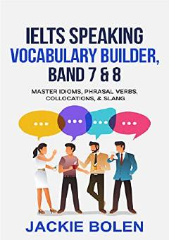

ISIELTS og'zaki qismi uchun idiomalar va so'z boyligini oshiruvchi qo'llanma.
Ushbu qo'llanma IELTS imtihonining og'zaki qismida 7 va 8 ballarni qo'lga kiritish uchun idiomalar, fe'lli fe'llar, qo'shma so'zlar va slanglarni o'rganishga yordam beradi. Kitob muallifi tajribali o'qituvchi Jackie Bolen bo'lib, u talabalarga ingliz tilida erkin va tabiiy muloqot qilish sirlarini o'rgatadi.